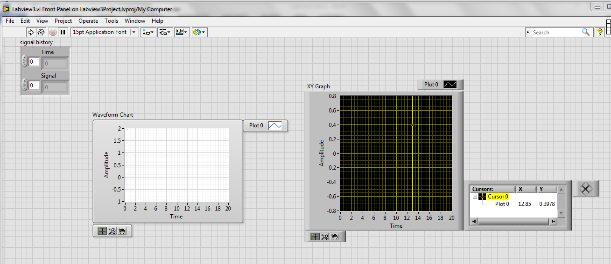
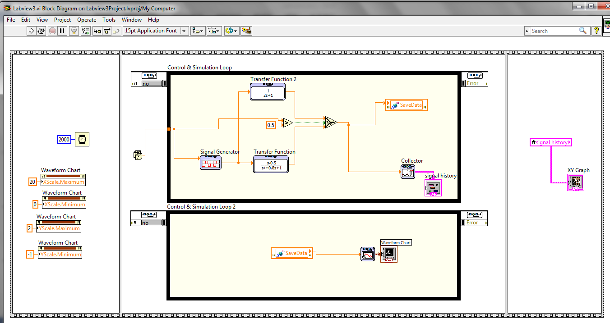
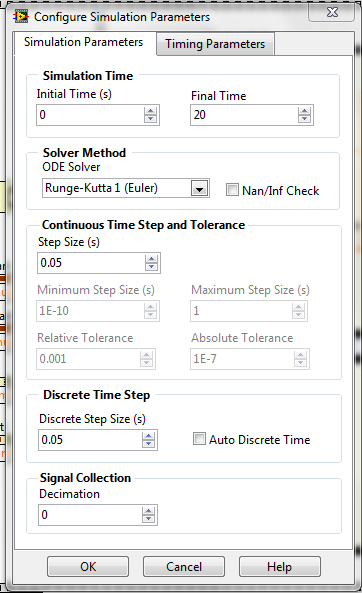
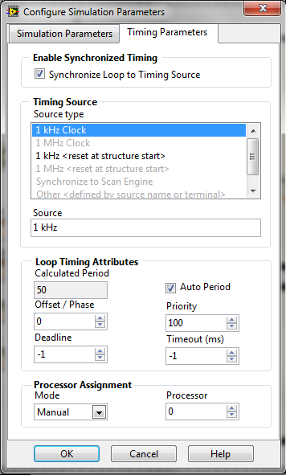

SE 423 Mechatronics
LabVIEW Assignment #3
This Is An Optional Assignment If You Would Like To Learn More About Graphs And Plotting In LABVIEW.
Demonstrate your programs working and be prepared to show me how you built parts of your LabVIEW program. Grading for this assignment is simply full credit if you did the assignment and no credit if you did not complete the assignment. Make sure to ask your instructors questions if you get stuck.
I would like you to go through the “Basics of Control Design and Simulation” tutorial. It can be found at
http://coecsl.ece.illinois.edu/se423/NI-Tutorial-BasicsofCDS.pdf. When you are done with this tutorial you
will have saved three files: “My Controls Example VI.vi”, “My Controls Example With Math Script VI.vi” and
“My Control and Simulation Example VI.vi” Demo all three of these VIs working for the first part of your check
off.
The last VI you built “My Control and Simulation Example VI.vi” uses the Control and Simulation Loop. You
should be familiar with MathWorks Simulink from previous classes like SE320 and ME360. You can think
of the blocks you place inside the Control and Simulation Loop in the same way as blocks in a Simulink
simulation.
For this next exercise, I would like you to reproduce the VI shown in the pictures below. For this exercise, start by
creating a LabVIEW Project. Then, inside this project, add a single VI. The reason I want you to use a project is that I
would like you to try out a “shared variable” created in a separate .lvlib file that will also become part of your project. I
will give some pointers and instructions below, but they will not necessarily be in the exact order you need to perform the
steps or complete the steps. In other words, you may need to do a small amount of your own hunting to find the necessary
blocks and other parts of the program, and use LabVIEW help to figure out how to use/wire certain blocks. Many of the
blocks I used below come from the “Control Design & Simulation → Simulation” section of LabVIEW.


Pointers/Instructions
After you add the two simulation loops, double click on their parameters tab in their top left corner, which will bring up the Configure Simulation Parameters window. Set up as in the pictures below. For the second Simulation Loop, set the same, except for the Processor Assignment: set it to “1”.


.lvlib file. Save this library
file with a name of your choosing.
Block Locations:
XScale.Minimum, XScale.Maximum, YScale.Minimum, YScale.Maximum. Property
Nodes allow you to change properties of a front panel object (in this case, a graph) during your program
run. Here I am just setting the range of the X and Y scales. You will see there are a huge number of
properties you can change on the fly if you wish. Since there are so many, it can be hard to find the
correct property to change the item you are interested in. Using Help and trial and error is the way
to figure out which property to change, finally. Create these property nodes by right-clicking on the
Waveform Chart block and selecting Create → Property Node → XScale → Range → Minimum. Do
the same for X Max, Y Min, and Y Max. If you right-click on the Property Node, the top option allows
you to change the property to a “Write”. (Or “Read” if you need to switch back.)To save your collected data to a file to load into Excel or MATLAB, right-click the plot and select Export. This allows you to export directly to an Excel file, or you can copy the data to the clipboard, then open your favorite editor (I like Notepad++) and paste all the data into that file. Play around with this export feature and make sure you can pull data into Excel or your favorite editor.